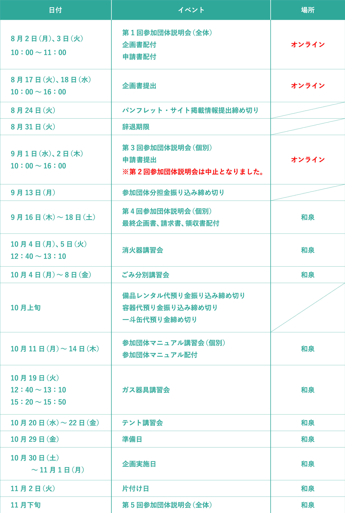
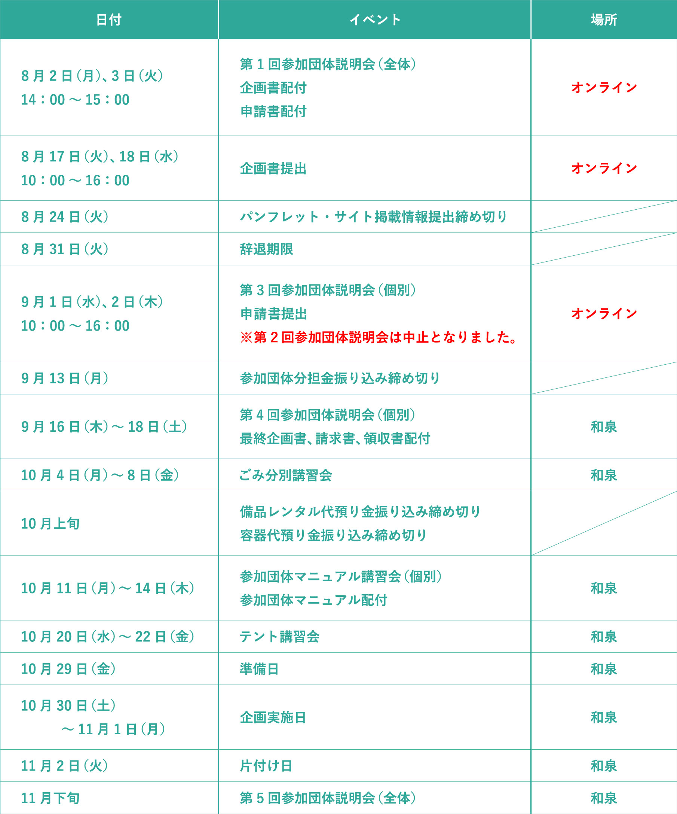

模擬店にて企画を行う方へ
【調理企画／物品販売・参加体験企画】
新型コロナウイルス感染症流行により、第1回参加団体説明会、企画書提出、第3回参加団体説明会がオンラインでの実施となりましたのでご注意ください。
～調理企画～
スケジュール

（※横スクロールが可能となっております。）
注意事項が何点かございますのでご確認ください。
※新型コロナウイルス感染症流行により、明大祭参加募集説明会でお伝えした日程とは異なっております。ご注意ください。
※模擬店企画を行う方に対しては、第2回参加団体説明会がございませんのでご注意ください。
※スケジュールは変更される場合があります。
～物品販売・参加体験企画～
スケジュール

（※横スクロールが可能となっております。）
注意事項が何点かございますのでご確認ください。
※新型コロナウイルス感染症流行により、明大祭参加募集説明会でお伝えした日程とは異なっております。ご注意ください。
※模擬店企画を行う方に対しては、第2回参加団体説明会がございませんのでご注意ください。
※スケジュールは変更される場合があります。
| 日付 | イベント | 配付資料 | ||||||||||||||
| 5月24日(月)～28日(金) | 明大祭参加募集説明会 | 明大祭参加募集要項 | ||||||||||||||
| 8月2日(月)、3日(火) | 第1回参加団体説明会 | 各種資料 ファイル内の配付資料は、以下の通りです。
|